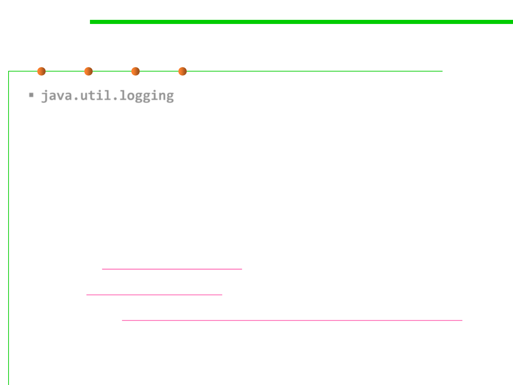

Logging frameworks
7.4 Debugging
▪ java.util.logging
– http://java.sun.com/j2se/1.4.2/docs/guide/util/logging/
– As of 1.4.2, Java includes a standard logging API java.util.logging,
commonly known as JUL.
▪ Log4j
– http://logging.apache.org/log4j/
– Apache log4j is probably the best-known Java logging library, and ports
exist to most major languages.
▪ Logback: http://logback.qos.ch/
▪ SLF4J: http://www.slf4j.org/
▪ syslog-ng: http://www.balabit.com/network-security/syslog-ng/